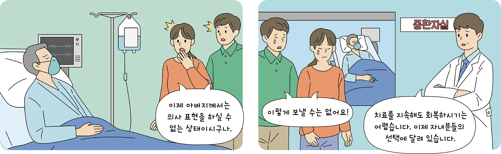
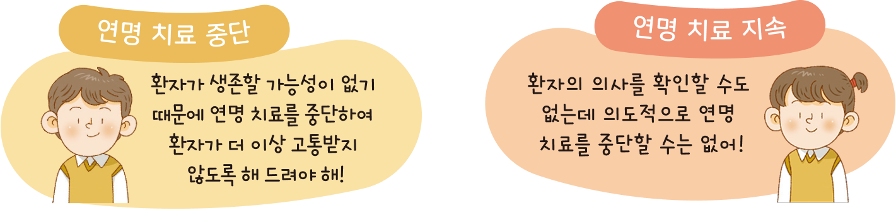

생각 열기 교실 밖 생각 수업 | 도덕적 딜레마
1단계 다음 글을 읽고, 「연명의료결정법」에 대해 알아보자.

2018년 3월부터 우리나라에서는 「연명의료결정법」, 이른바 존엄사법이 합법화되었다. 이 법은 무의미한 연명 치료를 거부하고 존엄한 죽음을 맞는 것에 대한 법이다. 이 법은 생존 가능성이 없고 치료를 지속해도 회 복되지 않으며 증상이 빠르게 악화하여 사망이 임박했다고 의학적 판단을 받은 경우 환자의 선택이나 가족의 동의에 따라 연명 치료를 중단할 수 있다는 내용을 담고 있다. 이는 병의 유무를 떠나 고통 없이 삶을 마감하고자 하는 안락사와는 다르다.
- KONIBP 국립 연명 의료 관리 기관
2단계 환자가 의식이 없는 상황에서 내가 환자의 자녀라면 어떤 결정을 내릴지 선택하고, 그 근거를 써 보자.

| 입장 | 근거 |
|---|---|
| 중단 |
|
| 지속 |
|